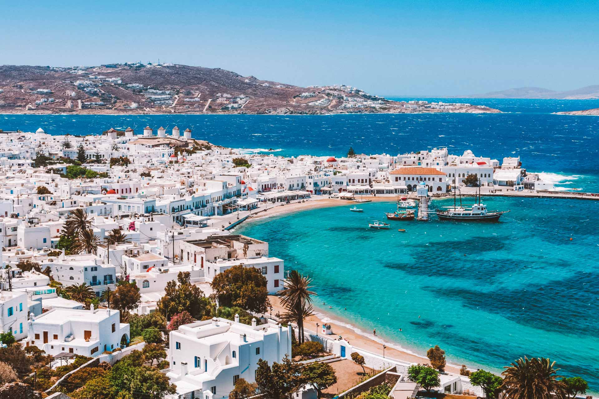

Enzo D´Angio Mota
Turma: 2ºF
Sobre mim
Sou apaixonado por conhecer novas culturas, pessoas e lugares incríveis ao redor do mundo.
Os lugares dos meus sonhos
Nome dos lugares:
Tenho muita vontade de conhecer os Estados Unidos, a Itália e a Grécia por tudo o que cada um representa em cultura, história e inovação.
Por que quero conhecer esses lugares?
Nos Estados Unidos, me atrai a modernidade e a força da tecnologia; na Itália, a arquitetura, a arte e a culinária marcante; e na Grécia, as paisagens paradisíacas e a riqueza histórica. Quero viver a experiência de caminhar por lugares icônicos, conhecer novas culturas e aprender de perto o que torna cada um desses destinos tão especial.
Estados Unidos
É sede de algumas das maiores empresas de tecnologia do planeta.

Vaticano
Dentro de Roma existe um país independente: o Vaticano.

Grécia
Possui mais de 6 mil ilhas, mas apenas cerca de 200 são habitadas.